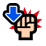

VS 나미&우솝
일반보스 [지]
Stage 1:
선제 행동:

격투형, 참격형, 강인형 캐릭터의 필살기 턴을 15턴 단축

격투형, 참격형, 강인형 캐릭터의 슈퍼 체인지 효과를 15 단축

격투형, 참격형, 강인형 캐릭터의 VS 효과의 게이지를 15 단축

도주
Stage 2:
선제 행동:
좌측의 [공백][힘][기][속][심][지][G][고기][연][폭탄] 슬롯을 [폭탄] 슬롯으로 변환

우측 상단의 [공백][힘][기][속][심][지][G][고기][연][폭탄] 슬롯을 [방해] 슬롯으로 변환

4턴 동안 [힘][기][심][지][和][연] 슬롯으로 공격했을 때 데미지 90% 감소
3턴 동안 슬롯 배리어([폭탄] 슬롯 1회)
Stage 3:
Lv1~Lv20의 경우
초기 상태: 나미&우솝

상태이상 무효

격파(전투 불능)계의 필살기 무효

비율 데미지 내성 100%

약점 타입: 강인형

2개의 [고기][셈라]를 얻기 전까지 매 턴 남은 체력의 30% 감소, 공격력 90% 감소

선원의 [공백][힘][기][속][심][지][G][고기][연][폭탄] 슬롯을 [마비] 슬롯으로 변환

3턴 동안 1000을(를) 넘는 데미지를 90% 감소

6턴 동안 남은 체력 1로 버티기 효과
Stage 3:
Lv21~Lv30의 경우
초기 상태: 나미&우솝
상태이상 무효
격파(전투 불능)계의 필살기 무효
비율 데미지 내성 100%
약점 타입: 강인형
2개의 [고기][셈라]를 얻기 전까지 매 턴 남은 체력의 30% 감소, 공격력 90% 감소
선원의 [공백][힘][기][속][심][지][G][고기][연][폭탄] 슬롯을 [마비] 슬롯으로 변환

6턴 동안 체인 계수가 2.5 이하일 경우 공격력 90% 감소
3턴 동안 1000을(를) 넘는 데미지를 90% 감소

3턴 동안[고기][셈라] 슬롯에 의한 회복을 축적하여 턴 종료 시 데미지로 변환
6턴 동안 남은 체력 1로 버티기 효과
3턴 동안 공격력 90% 감소
Stage 3:
Lv31~의 경우
초기 상태: 나미&우솝
상태이상 무효
격파(전투 불능)계의 필살기 무효
비율 데미지 내성 100%
약점 타입: 강인형
2개의 [고기][셈라]를 얻기 전까지 매 턴 남은 체력의 30% 감소, 공격력 90% 감소
선원의 [공백][힘][기][속][심][지][G][고기][연][폭탄] 슬롯을 [마비] 슬롯으로 변환
3턴 동안 20000 데미지의 화상
6턴 동안 체인 계수가 2.5 이하일 경우 공격력 90% 감소

중간단은(는) 받는 데미지 3배의 기절
3턴 동안 1000을(를) 넘는 데미지를 90% 감소
3턴 동안[고기][셈라] 슬롯에 의한 회복을 축적하여 턴 종료 시 데미지로 변환
6턴 동안 남은 체력 1로 버티기 효과
3턴 동안 공격력 90% 감소